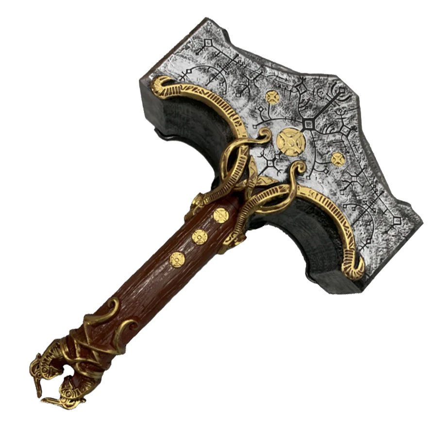

Thor (Old Norse: Þórr) is the Norse Aesir God of thunder, lightning, storms, and strength. He is the son of Odin and Fjörgyn, husband of Sif, older brother of Týr, older half-brother of Heimdall and Baldur. The father of Magni, Modi, Thrúd, step-father of Ullr and uncle of Forseti.
There are many differences between Thor and his brother Baldur. Baldur fought wildly, his motivation to inflict pain. Thor is calmer-his bloodlust is for the fight itself, not for the suffering it inflicts. The full force of his attack is as heavy as any I have felt. The hammer, Mjölnir, only compounds his power...each blow echoes with the death and destruction they have wrought together. He chose to end our fight prematurely. It is good for both of us that it did not reach its conclusion.
-Kratos
Mjölnir is the legendary hammer wielded by Thor, the Aesir God of Thunder. Forged by the Huldra Brothers Brok and Sindri, this super-weapon quickly became infamous within Thor's hands for the death and devastation it brought upon the Nine Realms, particularly among the Jötnar.
